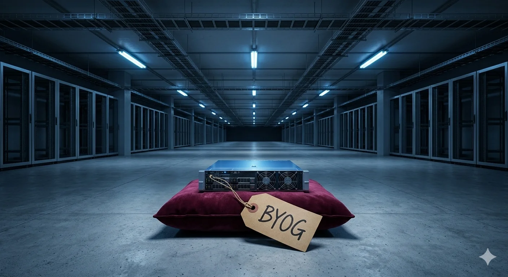
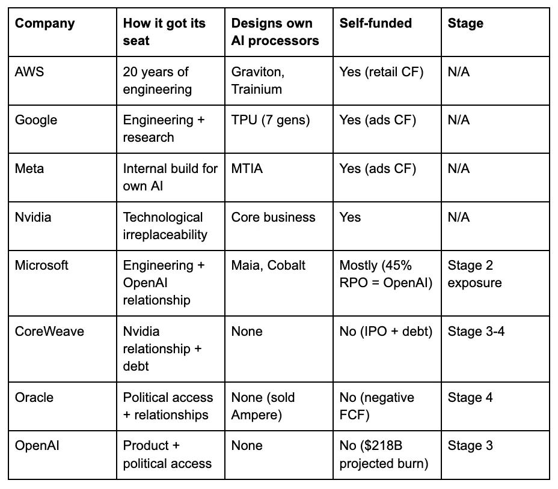

Oracle has produced the most leveraged cloud infrastructure transformation on record: $125 billion in debt, $553 billion in contractual commitments, 57 percent of which are concentrated in a single unprofitable customer, a stock that fell 56 percent in six months, and a credit rating two notches above junk.
Oracle’s moat was never cloud. It was clout — political access, personal relationships, and the willingness to make commitments no balance sheet could sustain. That distinction explains why the AI infrastructure boom’s first visible crack appeared not at a neocloud or a startup, but at the company whose chairman stood in the White House and promised half a trillion dollars he didn’t have.
This is the case studyHotel Abileneidentified as the weakest link in the codependence web. Oracle reported Q3 FY2026 earnings on March 10. What follows is the full arc — from irrelevance to megalomania to reckoning — and what the Q3 numbers reveal about the structure beneath the backlog.
A decade at the wrong table
Oracle Cloud Infrastructure launched on October 20, 2016, under the name “Oracle Bare Metal Cloud Services.” It arrived a decade after AWS, six years after Azure, and four years after Google Cloud Platform. Ellison himself had to cancel the first attempt. “There was a pretty big disagreement between me and the powers that be at Oracle,” he told investors in 2022. “I thought we were just copying what the other guys were doing — which I thought was a really bad idea — and I wanted to start over.”[1]
The Gen 2 rebuild was led by Clay Magouyrk, a former AWS engineer who joined Oracle in 2014 and now serves as CEO of Oracle Cloud. Magouyrk was direct about what he brought: “I knew how they built them, because I had worked there. And we hired people who also worked there.”[2] Oracle poached aggressively from Seattle. The strategy was explicit — reverse-engineer the architectural decisions AWS had made, then build a version optimized for Oracle’s database workloads. The resulting network architecture, built on RDMA (Remote Direct Memory Access) cluster networking, achieves 200 Gbps per GPU. SemiAnalysis validated the performance claim: OCI’s cluster networking delivers roughly four times the bandwidth of comparable AWS configurations for large GPU training jobs.[3]
That networking advantage is real — it’s the reason OpenAI and xAI initially chose OCI for training clusters. It is the one piece of genuine technical differentiation Oracle possesses.
One piece isn’t enough. For the decade between OCI’s 2016 launch and the AI boom, Oracle remained a rounding error in cloud market share. Synergy Research Group never gave Oracle a specific share figure — it consistently fell below the threshold for individual reporting, grouped with Alibaba, IBM, and Salesforce in the “others” category.[4] Gartner rated OCI a “Niche Player” — its lowest quadrant classification — from 2017 through 2021. Even after upgrading Oracle to “Visionary” in 2022, the analysts added a qualifier that captured the market’s sentiment: Oracle suffered from “negative brand association for many organizations, caused by years of tough compliance enforcement and inconsistent sales and support.”[5]
The revenue tells the story without interpretation. OCI generated approximately $2.5 billion in FY2022 — a figure AWS produced roughly every two weeks.[6] By Q2 FY2023, quarterly OCI revenue was $1 billion, growing 53 percent off a base so small the growth rate was mathematically inevitable. Oracle’s IaaS (infrastructure-as-a-service) market share in 2022 was an estimated 2 percent. By 2023, it was still approximately 2 percent. AWS held 31 percent. Azure held 20 percent. Google held 13 percent.[7] Oracle was not shaping the cloud market. It was orbiting it.
How clout became cloud
The transformation from irrelevance to the world’s largest AI infrastructure commitment didn’t happen through engineering breakthroughs or customer acquisition. It happened through three relationships — one personal, one political, one transactional — that culminated in a White House photo op.
The personal relationship came first. Larry Ellison and Elon Musk are close friends, neighbors on the same Hawaiian island, and mutual investors. When Musk launched xAI in 2023 and needed GPU clusters fast, Ellison offered what OCI had: cheap, available capacity with good cluster networking, none of the bureaucratic overhead of AWS or Azure, and a willingness to cut deals the hyperscalers wouldn’t. xAI’s initial Oracle commitment reportedly reached $10 billion.[8] It was Oracle’s first marquee AI customer — and it validated OCI’s cluster networking as genuinely competitive for frontier AI training.
The political relationship was longer in the making. Ellison hosted a six-figure-per-person Trump fundraiser at his Rancho Mirage estate in 2020. He has donated over $30 million to Opportunity Matters Fund and related entities since 2021, ranking eleventh on OpenSecrets’ list of federal-level megadonors.[9] Court records show he participated in a call with Senator Lindsey Graham and Sean Hannity about contesting the 2020 election results.[10] Safra Catz served on Trump’s 2016 transition team and donated $1 million to Preserve America PAC in 2024. A Trump adviser told Wired that Ellison is “sort of a shadow president of the United States.”[11] At the Stargate announcement, Trump said of Ellison: “In the case of Larry, it’s well beyond technology, he’s sort of CEO of everything.”[12]
On January 21, 2025, the political and transactional threads converged. Oracle stood alongside OpenAI and SoftBank at the White House to announce Stargate — a $500 billion commitment to AI infrastructure over 4 years, the largest technology investment in history. The optics were striking. The substance was thinner. SoftBank and OpenAI each contributed approximately $19 billion in initial equity and hold roughly 40 percent ownership each. Oracle and MGX, the Abu Dhabi sovereign fund, contributed $7 billion each — a 15-20 percent stake in a venture in which Oracle was positioned as the primary infrastructure provider.[13]
Elon Musk’s assessment, posted the same day, was blunt: “They don’t actually have the money.”[14]
The GCC dimension extended the clout thesis into sovereign territory. Oracle signed sovereign cloud agreements with STC in Saudi Arabia, du in the UAE, and operators in Bahrain and Kuwait, delivering OCI services through Oracle’s Alloy platform.[15] A $20 billion “UAE Stargate” project with MGX, OpenAI, Nvidia, and SoftBank positioned Oracle in Abu Dhabi. Oracle built an underground data center nine stories below Jerusalem. When asked about Oracle’s expanding Gulf presence, Catz was emphatic: “Our support has improved our business.”[16] The GCC cloud deals followed the same pattern as Stargate: Oracle’s access came through political channels (Trump’s May 2025 Gulf tour, the Abraham Accords diplomatic network, the MGX co-investment relationship), not through winning competitive cloud evaluations against AWS or Azure.
The structural concern is what access-based positioning doesn’t select for: geographic risk management. Oracle’s GCC data centers now sit in a kinetic zone whose risk profile changed permanently when Iranian retaliatory strikes damaged cloud infrastructure in the Gulf earlier this month.[17] Data residency requirements force sensitive data within national borders, and Oracle, unlike AWS, lacks the global footprint to absorb a regional facility loss.[18] A capability-built provider diversifies against geographic concentration. An access-built provider takes whatever geography the political relationship offers.
The pattern across all three relationships — Musk, Trump, Gulf sovereigns — is consistent. Oracle gained access through personal and political channels to opportunities its technology couldn’t win. That access produced extraordinary commitments. Those commitments now require extraordinary capital. And the capital is borrowed.
The Ellison escalation
Larry Ellison’s earnings call rhetoric followed a trajectory that, plotted alongside the stock price and the debt load, reveals the mechanism of the current crisis: each quarter’s promises were larger than the last, each one requiring more capital to fulfill, and each one masking the gap between what Oracle was committing and what Oracle was delivering.
The escalation began modestly. On the Q1 FY2024 call in September 2023, Ellison mused: “Is generative AI the most important new computer technology ever? Maybe. We’re about to find out.” He revealed $4 billion in signed AI training contracts.[19] The stock was at $115. Total debt was $86 billion. Free cash flow was positive.
By September 2024, the rhetoric had gone orbital: a financial analyst meeting projecting $104 billion in FY2029 revenue — doubling the $53 billion base — alongside a 131,072-GPU Blackwell cluster announcement and Larry describing “soon-to-be-built data centers exceeding a gigawatt.”[20] By June 2025, Ellison abandoned any remaining restraint: “We will build and operate more cloud infrastructure data centers than all of our cloud infrastructure competitors combined.”[21] He described demand as “almost insatiable.”
The September 2025 Q1 FY2026 call was the crescendo. Safra Catz projected OCI revenue growing from $18 billion in FY2026 to $32 billion, then $73 billion, then $114 billion, then $144 billion over four years.[22] RPO — remaining performance obligations, Oracle’s measure of contracted but unrecognized revenue — hit $455 billion. The $300 billion OpenAI deal was revealed. The stock surged 36 percent in a single session — its strongest day since 1992 — and peaked at $345.72.[23] Ellison’s net worth jumped roughly $100 billion in 24 hours, briefly making him the world’s richest person.[24]
Ellison has always bet this way. PeopleSoft in 2004: $10.3 billion hostile takeover, delivered.[25] Sun in 2010: $7.4 billion for a company losing $100 million a month — most analysts wrote it off, but the hardware and systems engineering talent became part of Oracle’s infrastructure foundation.[26] Cerner in 2022: $28.3 billion — a 20 percent premium — for a healthcare IT platform now losing customers and reportedly being explored for divestiture.[27] Each bet larger than the last. Each time, the database monopoly’s cash flow bailed Oracle out. The difference this time is that the cash flow can’t cover the hangover: free cash flow is already negative $10 billion, and the bet is five times larger than Cerner.
Ellison is the octogenarian billionaire with a Hawaiian island, a fighter jet collection, and an unwavering belief that personal willpower can reshape industries. But unlike the comic-book version of that archetype, Ellison doesn’t build the thing himself. His data centers are built by Crusoe Energy Systems (a former cryptocurrency mining company), financed by Blue Owl Capital (whose own fund is gating redemptions), and powered by land and utilities sourced by Lancium.[28] Oracle’s contribution is the check, the customer relationship, and a signature on contracts that no other company’s CFO would approve.
The market believed the narrative for exactly three months. Then the balance sheet arrived.
The balance sheet beneath the backlog
Four tests reveal the structure beneath the headline numbers.
Can Oracle pay for its own buildout?The simplest question in corporate finance: does the business generate enough cash to fund what it’s spending? In FY2024, Oracle spent $6.9 billion building infrastructure against $18.7 billion in cash from operations — comfortably self-funded, with $11.8 billion left over.[29] In FY2025, infrastructure spending tripled to $21.2 billion. Cash from operations was $20.8 billion. For the first time in at least 15 years, Oracle spent more than it earned, recording a negative $390 million.[30] In the first half of FY2026, the gap widened: $20.5 billion in spending against $10.2 billion in cash from operations, leaving a $10.3 billion shortfall.[31] Over the trailing twelve months through Q3, cash from operations reached $23.5 billion — growing, but still $26.5 billion short of $50 billion in planned infrastructure spending. That gap is funded entirely by borrowing.
How real is the $553 billion backlog?Oracle’s remaining performance obligations — contracted revenue not yet recognized — reached $553 billion in Q3. That is approximately 32 times its quarterly revenue.[32] For comparison, AWS carries roughly 7 times and Microsoft roughly 9 times.[34] The conversion schedule explains why the ratio matters: only a third of the backlog converts to revenue within twelve months. Another third arrives in years three through five. The rest stretches beyond five years.[33]
The near-term portion is growing: the twelve-month slice grew 40 percent year-over-year in Q2, up from 25 percent the prior quarter.[35] That’s encouraging. But the total backlog grew 438 percent in the same period, meaning the portion that won’t convert for three to fifteen years is expanding far faster than the portion that will. The backlog isn’t fake. The timing is the problem: Oracle’s debt payments begin immediately, while the revenue that justifies the debt arrives over a five-to-fifteen-year horizon. If investors lose appetite for Oracle bonds before that revenue materializes, the debt clock kills the company before the backlog converts. Oracle locked in maturities stretching to 2065 on some recent issuances, so it doesn’t face imminent principal repayment — interest expense and infrastructure funding are the immediate pressure.[36]
The concentration makes the timing problem existential. Approximately 57 percent of Oracle’s backlog — roughly $300 billion — comes from a single customer, OpenAI, whose own financial projections show $218 billion in cumulative cash consumption through 2029 and no profitability until 2029 or 2030.[37] Moody’s flagged the OpenAI contract as “effectively one of, if not the world’s largest, project financing” and warned of “significant counterparty concentration risk.”[38] If OpenAI’s ability to honor tens of billions per year in Oracle commitments depends on continued multi-billion-dollar fundraising, then Oracle’s $553 billion backlog is not a committed revenue stream. It is a bet on other people’s willingness to fund OpenAI indefinitely.
How much debt is too much?Total debt has reached approximately $125 billion after the February 2026 bond offering — up from $87 billion in FY2024.[39] In just five months, Oracle issued $43 billion in new bonds. For every dollar of shareholder equity, Oracle owes roughly five dollars in debt — Barclays calculated the ratio at approximately 500 percent, versus 50 percent at Amazon, 30 percent at Microsoft, and even lower at Meta and Google.[40] Both S&P and Moody’s rate Oracle two notches above junk, with negative outlooks.[41] S&P’s trigger for downgrade: leverage remaining elevated for two years. Oracle is already past the threshold.
In November 2025, Barclays analyst Andrew Keches downgraded Oracle debt to Underweight — the bond market’s equivalent of Sell — and warned that Oracle would “run out of cash by the November 2026 quarter.”[42] The stress test showed the shortfall materializing even without further spending increases. Keches warned Oracle “could ultimately fall to a BBB-minus rating, nearing the threshold for junk bonds” and compared Oracle’s credit profile to “high-risk BBB-minus issuers, such as certain automotive and cable companies.”[43] The cost of insuring Oracle’s debt against default surged past 150 basis points in December 2025 — the highest level since 2009, and a signal that bond investors see more risk in Oracle than in any other major technology company.[44] Oracle has since raised $73 billion in debt and equity-linked instruments, which extends the runway — but borrowing to extend the runway is itself the mechanism the access sequence describes.
What is Oracle sacrificing to keep building?Bloomberg reported on March 5 that Oracle plans to cut 20,000 to 30,000 employees — 12 to 18 percent of its global workforce — to free $8 to $10 billion in cash flow for AI data center construction.[45] The company is cannibalizing its existing business to feed a new one. That’s not a pivot. It’s a confession that the existing business cannot support the commitments the new one requires.
What Ellison built
The cluster networking works — it’s the reason frontier labs chose Oracle before Oracle had political access to offer. The first AI customers came for the engineering, not the White House. The $300 billion Stargate commitment came through political channels. Technical merit at the cluster level cannot compensate for what happens when commitment scale overwhelms the operating model.
OCI’s pricing is lower than AWS's and Azure's for comparable compute instances, particularly for GPU clusters, with consistent global pricing that hyperscalers can’t match.[49] The Gen 2 architecture, rebuilt from scratch after Ellison’s cancellation of Gen 1, is cleaner than the legacy sprawl of AWS’s 200-plus services. For the narrow use case of massive GPU cluster training — the workload that defines the current AI infrastructure market — OCI is technically competitive. Customers confirm it: MosaicML (now part of Databricks) reported linear performance scaling across hundreds of GPUs on OCI’s cluster network. Reka, founded by researchers from DeepMind and Google Brain, chose OCI for training its multimodal models. Magouyrk disclosed on the Q2 earnings call that new customers consume allocated capacity “in two to three days.”[50]
The relevant question is not whether Oracle matches AWS’s operating model — it was never designed to do so. What matters is whether Oracle’sactualoperating model — leasing facilities, outsourcing construction, concentrating on cluster networking for AI training workloads — can generate returns on the capital invested.
For a niche cloud provider running $5 billion in quarterly OCI revenue, the asset-light model might be exactly right. You don’t need to design your own chips or build your own cooling systems to rent GPU clusters profitably. AWS designs its own Graviton and Trainium processors, operates hundreds of availability zones, and has 20 years of institutional knowledge in permitting, power procurement, and construction management. Google designs its own TPUs and cooling systems. Microsoft developed the Maia AI accelerator and the Cobalt CPU.[51] Oracle does none of this — but for a focused GPU rental business, it doesn’t have to. (Full disclosure: I spent six years at AWS. That experience informs what I know about hyperscale operations — and readers should weigh it accordingly.)
What scale broke
The problem is not the model. The problem is that Oracle committed $553 billion in backlog and borrowed $125 billion while running a model designed for a fraction of that scale. When Ellison confirmed in late 2025 that Oracle had sold Ampere Computing because “we no longer think it is strategic for us to continue designing, manufacturing, and using our own chips,” he wasn’t making a mistake — he was affirming the asset-light approach.[52] But an asset-light approach that depends on third-party contractors for construction, third-party financing for capital, and a single customer for the majority of the backlog has no margin for error at the gigawatt scale. The operational gap showed at Abilene. Winter weather disrupted liquid-cooling infrastructure at the flagship Stargate campus, forcing buildings offline for multiple days.[53] The Stargate LLC joint venture itself is reportedly dormant — three sources told The Information it’s a “shelved idea” with no staff hired.[54] Blue Owl declined to finance the Michigan campus.[55] The Abilene expansion was scrapped.[56] xAI, initially a marquee customer, withdrew, with Musk implying Oracle couldn’t keep pace.[57]
Scale broke the model — the mismatch between an asset-light operating structure and half-a-trillion dollars in commitments that require the execution discipline of an asset-heavy one.
And the floor beneath the AI bet may not be stable. Oracle’s legacy database and applications business is the engine behind $23.5 billion in trailing twelve-month operating cash flow — real money, and the machine that bailed out every previous Ellison gamble. But that franchise faces its own pressure. Cloud-native databases are eroding the on-premise installed base. Third-party support providers like Rimini Street have built entire businesses on undercutting Oracle maintenance contracts. And the Cerner integration is consuming management attention amid reported customer dissatisfaction — the VA health record system implementation alone has drawn congressional scrutiny.[58] Oracle’s software support revenue, the bedrock of the legacy franchise, has been flat to slightly declining for several years, which means shrinking in real terms.[59] If the cash flow machine that’s supposed to sustain Oracle through the timing gap is itself degrading, Barclays’ timeline gets worse.
What Q3 reveals
Oracle reported Q3 after the bell. The numbers beat expectations: revenue of $17.2 billion (up 22 percent — what Oracle called its first 20-plus percent organic growth quarter in over fifteen years), earnings per share of $1.79 excluding stock compensation and other non-cash items (above the $1.70 Wall Street expected), and OCI revenue of $4.9 billion (up 84 percent year-over-year). The stock jumped nearly 8 percent after hours. FY2027 total revenue guidance was raised to $90 billion.[46]
The beat is real. What it doesn’t resolve is the structure beneath it. The backlog grew to $553 billion — still expanding, but each quarter adds less than the one before: $68 billion in Q2, only $29 billion in Q3. The commitment machine is slowing. OCI revenue acceleration is real: $4.9 billion, up from $4.1 billion last quarter. But the backlog-to-revenue ratio barely moved — still 32 times, virtually unchanged from Q2. The timing gap between what Oracle owes and what Oracle earns hasn’t closed.
On capital, Oracle raised another $30 billion — partly through bonds rated above junk (for now), and partly through a type of preferred stock that will eventually convert into common shares, diluting existing shareholders. Total capital raised now exceeds $73 billion in under a year. The company said it does not intend to issue more bonds in calendar 2026 — but it also secured the right to sell new shares directly into the stock market at any time, and hasn’t used that option yet.[47]
The $90 billion FY2027 total revenue guidance deserves serious engagement. At that run rate, the backlog-to-revenue ratio drops to roughly 25 times — better, but still roughly three times worse than AWS or Microsoft. Even if Oracle delivers $90 billion, the timing gap doesn’t close — it narrows. The question is whether management guidance that has escalated every quarter since September 2023 constitutes evidence that the revenue will materialize, or whether it is the latest iteration of the Ellison escalation, the piece just documented. The Q3 results are the strongest evidence yet that the bull case may be right on revenue. They are equally strong evidence that the capital structure needed to produce that revenue remains unsustainable without external funding. Both things are true simultaneously.
The most revealing detail was structural, not financial. Oracle disclosed that new large-scale AI contracts in Q3 are funded either by customer prepayments — in which customers pay Oracle upfront to purchase GPUs — or by customers buying GPUs themselves and supplying them to Oracle for operation. No cloud provider marketing itself as a hyperscaler has ever structured contracts this way. Colocation operators have always operated on customer-funded models, but they don’t claim to be cloud providers. AWS, Azure, and Google Cloud fund their own infrastructure and charge customers for usage. Oracle is inverting the model: the customer bears the capital cost, Oracle provides the rack space and networking. That is colocation economics at hyperscale prices — and it means the $553 billion backlog carries a different risk profile than the headline number implies. Oracle isn’t committing $553 billion in capital. Its customers are. Oracle is shifting capital risk to its counterparties — either because it has learned the lesson of Abilene, or because its balance sheet can no longer absorb the capital requirements of the commitments it signs.[48]
The access sequence
The analyst consensus on Oracle is “AI spending too much, debt too high.” That’s a description, not a diagnosis. When a company’s position on a capital-intensive technology layer depends on access rather than capability, the failure follows a sequence — and the sequence is predictable.
Stage 1 — Access.Political, personal, or financial relationships secure a position that the company couldn’t win through competitive evaluation. The access is real. The capability it implies is not.
Stage 2 — Overcommitment.Access produces commitments — contracts, joint ventures, government announcements — that exceed the company’s operational capacity to deliver. The commitments are rational for every counterparty: each one needs the relationship for a different reason.
Stage 3 — Capital substitution.Borrowed capital replaces operational capability as the mechanism for fulfilling commitments. The company finances what it cannot build. Debt or equity infusions substitute for the engineering, operations, and institutional knowledge that competitors accumulated over decades.
Stage 4 — Operational exposure.The gap between commitments and capability becomes visible. Projects fail, partners withdraw, timelines slip. Each failure increases the capital required to maintain the position.
Stage 5 — The maturity mismatch.Capital costs (debt service, interest expense, or cash burn) arrive on a fixed schedule. Revenue from commitments arrives on the counterparty’s schedule—years or decades later. If access to capital markets tightens before the revenue materializes, the structure collapses.
Oracle entered Stage 1 through Ellison’s relationships with Musk and Trump. Stage 2 was Stargate and the $553 billion backlog. Stage 3 was $43 billion in bonds in five months. Stage 4 is Abilene, Blue Owl, xAI. Stage 5 is what Barclays is warning about: cash exhaustion by November 2026.
The sequence is not new. Global Crossing followed suit in the late 1990s: political access to rights-of-way produced commitments to lay fiber across oceans, debt replaced operational cash flow, utilization never matched capacity, and the maturity mismatch led to bankruptcy. WorldCom followed the same path. The technology was different. The financial structure was identical.
OpenAI — the company on the other side of Oracle’s $300 billion contract — is following the same sequence. Stage 1: Sam Altman’s political access — White House visits, congressional testimony, the Stargate photo op — and the Microsoft partnership secured OpenAI infrastructure commitments no company with negative cash flow could have earned on financial merit alone. Stage 2: $300 billion in Oracle commitments, Stargate, enterprise contracts — commitments that assume revenue OpenAI has never generated. Stage 3: $6.6 billion in equity at a $157 billion valuation, a for-profit conversion designed to unlock further capital, projected cumulative cash consumption of $218 billion through 2029.[60] The mechanism is equity rather than debt, but the structural dynamic is identical: external capital substituting for self-generated cash flow.
Oracle’s $300 billion contract with OpenAI is not a transaction between a strong buyer and a leveraged seller. It is Stage 2 meeting Stage 3 — two companies whose positions depend on access rather than capability, each using the other’s commitment to justify its own capital raise. Moody’s called it the world’s largest project financing. It might be the world’s largest circular reference.
Does this pattern sort the entire AI infrastructure ecosystem? One distinction first: OpenAI built GPT-4 — a genuine product capability. It enters the access sequence only on theinfrastructure and capitalside, which means its path out (product revenue reaching self-funding scale) is more plausible than Oracle’s. The table below maps eight companies by how they got their infrastructure seat and whether the five-stage sequence applies.[62]

The pattern sorts cleanly. The four companies that earned their infrastructure position through engineering — AWS, Google, Meta, Nvidia — design their own processors, fund their capex from operating cash flow, and don’t appear on the framework at all. Their risk is cyclical (demand slowdown), not structural (access-dependent position collapsing). They built the thing. They own the thing.
Microsoft occupies an interesting middle ground. Azure is an engineering achievement on its own merits — two decades of enterprise operations, custom Maia AI chips, custom Cobalt CPUs, hundreds of thousands of enterprise customers who chose Azure in competitive evaluations. But the OpenAI partnership introduced Stage 2 characteristics: 45 percent of commercial commitments from a single counterparty that won’t be profitable until 2029.[61] Microsoft’s balance sheet can absorb the exposure. If OpenAI’s trajectory disappoints, Microsoft writes down a multi-billion-dollar investment and restructures a commercial relationship that accounts for nearly half its forward-looking cloud commitments. That’s not existential. It is the kind of risk that access-based dependencies introduce even into capability-built companies.
Then there are Oracle, CoreWeave, and OpenAI at the bottom of the table — deep into the five-stage sequence, dependent on continued access to capital markets. CoreWeave followed a parallel path through Nvidia’s relationship rather than political access, and its credit default swaps tell the same story Oracle’s do. The difference between them and OpenAI is that OpenAI has a product that could, eventually, fund the infrastructure. Oracle has a landlord business funded by debt. CoreWeave has a GPU rental business funded by an IPO and more debt.
What access purchases
Hotel Abilene asked why six rational companies are tightening a web that serves none of them. This piece answers a different question: how the weakest one got in. Codependence doesn’t select for strength. It selects for willingness, and willingness without capability is what access purchases.
The five-stage sequence is falsifiable. If Oracle’s RPO-to-revenue ratio closes from 32 times to the 7-9 times that AWS and Microsoft maintain — meaning the backlog converts into recognized revenue at hyperscaler rates — the model works at scale, and the debt is serviceable. If the pattern produces a different outcome at any company where access substitutes for capability, the framework is wrong. Apply it to your own deal flow.
Oracle’s chairman stood in the White House and committed half a trillion dollars. His balance sheet had $7 billion. His customers are now buying their own GPUs. The cloud was always someone else’s. The clout was always his.
Notes
[1] Larry Ellison, Oracle CloudWorld 2022, as reported byThe Register, “Larry Ellison killed Oracle’s first-generation cloud,” October 24, 2022.
[2] Clay Magouyrk, SVP Oracle Cloud Infrastructure, interview with TechTarget, 2019. A-tier (named executive, on-the-record quote).
[3] SemiAnalysis, “How Oracle Is Winning the AI Compute Market.” OCI’s cluster networking uses RDMA over Converged Ethernet version 2 (RoCEv2) with non-blocking cluster fabric on NVIDIA ConnectX-7 NICs. Oracle claims 200 Gbps per GPU and approximately 4x the cluster bandwidth of comparable AWS configurations for large training jobs. B-tier: industry analyst architectural analysis, not independently replicated benchmark.
[4] Synergy Research Group consistently reported Oracle below the threshold for individual cloud IaaS market share reporting through 2022. B-tier (industry analyst data).
[5] Gartner, “Magic Quadrant for Cloud Infrastructure and Platform Services,” 2022. Oracle classified as “Visionary” (upgraded from “Niche Player” held 2017-2021).The Register, October 2022.
[6]Oracle FY2022 10-K: total cloud infrastructure (IaaS + PaaS) revenue approximately $2.5 billion. Note: Oracle’s cloud revenue reporting methodology combines IaaS and PaaS differently than AWS reports IaaS alone; the comparison is directionally accurate but not precisely apples-to-apples.Amazon 10-K FY2022: AWS revenue $62.2 billion. $62.2B / 26 two-week periods = ~$2.4B. A-tier (company filings).
[7] Cloud IaaS market share data from Synergy Research Group and Canalys for calendar years 2022-2023. AWS ~31%, Azure ~20%, Google Cloud ~13%, Oracle ~2%. B-tier (industry analyst data).
[8] xAI’s initial Oracle contract was reported at up to $10 billion. The Information and Bloomberg, 2024. xAI subsequently withdrew. B-tier (press reporting, contract terms not publicly filed).
[9]OpenSecrets, “Oracle invested millions in government influence before winning a major stake in TikTok,” September 2025. A-tier (federal campaign finance filings).
[10] Court records from the January 6 investigation showed Ellison’s participation in a call with Senator Lindsey Graham and Sean Hannity.CNN, September 2025. A-tier (court records).
[11] Safra Catz, Trump’s 2016 transition team. $1 million Preserve America PAC donation:OpenSecrets filings. A-tier (FEC filings).
[12] Trump at the Stargate announcement, January 21, 2025. A-tier (public remarks of record).
[13] Stargate LLC structure: SoftBank and OpenAI each ~$19 billion and ~40% ownership. Oracle and MGX each ~$7 billion. Multiple press reports citing SEC filings.
[14] Elon Musk, posted on X, January 21, 2025.Entrepreneur.com.
[15] Oracle sovereign cloud agreements: STC (Saudi Arabia), du (UAE), operators in Bahrain and Kuwait.Gulf Business, January 2025.
[16] Safra Catz: “Our support has improved our business.”CTech/Calcalist, July 2025. Underground Jerusalem data center confirmed in the same interview. B-tier.
[17] AWS facilities sustained damage during Iranian retaliatory strikes in early 2026. Referenced in prior AI Realist coverage (”Access, Disable, Destroy“).
[18] Data residency requirements in Saudi Arabia (CST regulations, PDPL) and the UAE mandate that sensitive data be stored within national borders. The dynamics by which sovereignty regulations concentrate data in kinetically vulnerable locations are analyzed in the AI Realist’s sovereignty vertical framework.
[19] Larry Ellison,Oracle Q1 FY2024 earnings call, September 11, 2023. A-tier.
[20]Oracle Financial Analyst Meeting, September 2024. $104 billion FY2029 revenue target. 131,072 Nvidia Blackwell GPU cluster. A-tier.
[21] Larry Ellison,Oracle Q4 FY2025 earnings call, June 11, 2025. A-tier.
[22] Safra Catz,Oracle Q1 FY2026 earnings call, September 9, 2025. OCI revenue projections: $18B, $32B, $73B, $114B, $144B over five fiscal years. A-tier.
[23] Oracle stock surged approximately 36% on September 10, 2025, hitting an intraday high of $345.72. RPO reached $455 billion.CNBC. A-tier.
[24]CNBC, “Larry Ellison is $100 billion richer after blowout Oracle earnings report,” September 10, 2025.
[25] Oracle acquired PeopleSoft for $10.3 billion in December 2004 after an 18-month hostile takeover bid.The Register, January 2025;Springer Nature case study. A-tier (SEC filings; extensively documented).
[26] Oracle acquired Sun Microsystems for $7.4 billion in January 2010. Ellison said at the time that Sun was “losing $100 million a month.”CIO, 2024. A-tier (SEC filings; executive public statements).
[27] Oracle acquired Cerner for $28.3 billion in June 2022, a 20% premium over Cerner’s closing price.CNBC, December 2021. A-tier for acquisition price (SEC filing); B-tier for divestiture reporting (press).
[28] Crusoe Energy Systems: primary data center operator for the Abilene Stargate site. SemiAnalysis described Crusoe as “on paper, a cryptominer inexperienced with datacenters.” Blue Owl Capital: primary financing partner. Lancium: land and power infrastructure. B-tier (press reporting).
[29]Oracle FY2024 10-K. Capex $6.9 billion, GAAP operating cash flow $18.7 billion, free cash flow $11.8 billion. A-tier (SEC filing).
[30] Oracle FY2025 annual results. Capex $21.2 billion, GAAP operating cash flow $20.8 billion, free cash flow approximately negative $390 million. Oracle reports FCF was positive in every fiscal year from at least FY2010 through FY2024 per available data. A-tier (SEC filing).
[31] Oracle H1 FY2026 (Q1+Q2). Capex approximately $20.5 billion, GAAP operating cash flow approximately $10.2 billion, free cash flow approximately negative $10.3 billion.Q2 FY2026 earnings release: capex $12 billion in Q2 alone. A-tier (SEC filing).
[32] Oracle Q3 FY2026 RPO: $553 billion. Quarterly revenue $17.2 billion. $553B / $17.2B = ~32.2x.Oracle Q3 FY2026 earnings release, March 10, 2026. A-tier.
[33]Oracle 10-Q for Q2 FY2026(period ended November 30, 2025): approximately 33% of RPO expected to be recognized in the next 12 months; approximately 35% in months 37-60; remainder thereafter.Oracle Q1 FY2026 10-Q(filed with SEC) provides the conversion schedule disclosure. A-tier (SEC filings). The near-term convertible portion (~$173B) represents approximately one-third of total RPO.
[34] AWS RPO approximately $190 billion (per Amazon Q4 2025 10-K) versus ~$28 billion quarterly revenue = ~6.8x. Microsoft commercial RPO $625 billion (per Microsoft Q2 FY2026 10-Q) versus ~$70 billion quarterly revenue = ~8.9x. A-tier (SEC filings). OpenAI’s share of Microsoft RPO is estimated at 45% per Fortune and Fierce Network. B-tier for attribution breakdown.
[35] Doug Kehring, Oracle Principal Financial Officer,Q2 FY2026 earnings call, December 10, 2025: “RPO expected to be recognized in the next twelve months grew 40% year over year, compared with 25% last quarter, and 21% last year.” A-tier.
[36] Oracle’s September 2025 and February 2026 bond offerings included tranches with maturities extending to 2055 and 2065. The immediate cash pressure is interest expense ($1.18 billion in Q3 alone, up 32 percent year-over-year, implying an annualized run rate approaching $4.7 billion) and capex funding, not principal repayment.Oracle Q3 FY2026 earnings release;Data Center Dynamics. A-tier (SEC filing).
[37] OpenAI cumulative cash consumption projections: $218 billion through 2029, per internal projections shared with investors.Sherwood News. Profitability not expected until 2029-2030 per Fortune. B-tier (leaked investor materials via quality journalism).
[38] Moody’s: “effectively one of, if not the world’s largest, project financing” and “significant counterparty concentration risk.”Yahoo Finance. A-tier (credit rating agency assessment).
[39] Oracle total debt trajectory: ~$87B (FY2024) → ~$104B (FY2025) → ~$125B+ post-February 2026 bond offering. A-tier (Oracle 10-K and 10-Q filings).
[40] Barclays debt-to-equity comparison: Oracle approximately 500%, Amazon ~50%, Microsoft ~30%. Barclays fixed income research note, November 2025. Note: sourced through secondary financial reporters, as the original research note is not publicly available. B-tier (consistent secondary reporting of A-tier source).
[41] S&P: BBB, Negative outlook. Moody’s: Baa2, Negative outlook. Fitch: BBB, Stable. A-tier (credit rating agency publications).
[42] Barclays fixed income analyst Andrew Keches, Underweight downgrade, November 11, 2025. “Run out of cash by the November 2026 quarter.” Sourced through financial media. B-tier (consistent secondary reporting).
[43] Keches: “could ultimately fall to a BBB-minus rating, nearing the threshold for junk bonds.” Compared to “high-risk BBB-minus issuers, such as certain automotive and cable companies.” Same note and secondary sources.
[44] Oracle's five-year CDS spread surged past 150 basis points in December 2025, its widest since 2009.Bloomberg, “Oracle Debt Trades Like Junk as Bond, CDS Spreads Flare,” December 12, 2025. Deutsche Bank reported 156 bps; S&P Global Market Intelligence reported 139 bps on December 11. CDS trading volume climbed to $9.2 billion over the past 10 weeks. B-tier (consistent multi-source reporting).
[45] Bloomberg, March 5, 2026. TD Cowen estimated 20,000-30,000 employees (12-18% of ~162,000 workforce), freeing $8-10 billion in cash flow. B-tier (quality journalism).
[46]Oracle Q3 FY2026 earnings release, March 10, 2026. Revenue $17.2 billion (up 22% YoY), non-GAAP EPS $1.79 (up 21%), OCI revenue $4.9 billion (up 84%), cloud revenue $8.9 billion (up 44%). FY2027 revenue guidance raised to $90 billion. A-tier (SEC filing).
[47] RPO: $553 billion (up 325% YoY, up $29 billion sequentially from $523 billion). Sequential growth decelerated from +$68B in Q2 to +$29B in Q3. Oracle raised $30 billion via investment-grade bonds and mandatory convertible preferred stock; stated intention not to issue additional bonds in calendar 2026. At-the-market equity program not yet initiated. Same earnings release. A-tier.
[48] Oracle disclosed that Q3 large-scale AI contracts are structured with customer prepayments (customer funds for GPU purchases upfront) or customer-supplied GPUs. Per the earnings release: “Oracle does not expect to have to raise any incremental funds to support these contracts as most of the equipment needed is either funded upfront via customer prepayments so Oracle can purchase the GPUs, or the customer buys the GPUs and supplies them to Oracle.” This represents a structural shift from Oracle-funded to customer-funded capital expenditure for new AI commitments. A-tier (SEC filing).
[49] OCI pricing: Oracle’s published pricing is typically 30-50% lower than comparable AWS/Azure instances in US regions, with consistent global pricing.Oracle.com pricing page. C-tier for specific percentage claims (vendor-published). The pricing advantage is directionally confirmed by third-party comparisons, but the magnitude varies by workload.
[50] MosaicML (now Databricks) reported linear performance scaling across hundreds of GPUs on OCI’s cluster network in NCCL benchmarks.Oracle Cloud Infrastructure blog: “To the best of our knowledge, no cloud provider has posted better results in absolute terms (speed) or as a % of the theoretical maximum (scaling efficiency).” Reka, founded by researchers from DeepMind, Google Brain, and FAIR, selected OCI for training multimodal models and cited “high-performance AI infrastructure capabilities, dedicated engineering support, and global footprint.”Oracle press release, April 2024. Magouyrk on capacity consumption:Q2 FY2026 earnings call, December 10, 2025. B-tier (customer endorsement + vendor benchmark + earnings call disclosure).
[51] AWS: custom Graviton CPU (4 generations), custom Trainium AI accelerator (2 generations), 20+ years of operations. Google: custom TPU (7 generations). Microsoft: Maia AI accelerator, Cobalt ARM CPU. Data Center Dynamics, 2024. B-tier.
[52] Ellison on Ampere sale: “We no longer think it is strategic for us to continue designing, manufacturing, and using our own chips.”Oracle Q2 FY2026 earnings release(SEC filing, EX-99.1). A-tier.
[53] Abilene cooling infrastructure disruptions: The Information, viaData Center Dynamicsand Tom’s Hardware, March 2026. B-tier (press reporting).
[54] Stargate LLC is described as dormant: The Information, cited by multiple outlets. Three sources described it as a “shelved idea.” B-tier.
[55] Blue Owl declined Michigan financing:CNBC, December 17, 2025. B-tier (quality journalism).
[56] Abilene expansion scrapped: Bloomberg, March 6, 2026. B-tier (quality journalism).
[57] xAI withdrawal: reported across multiple outlets. B-tier (press reporting).
[58] Oracle’s legacy database franchise faces multiple pressures. Rimini Street’s business model is built on undercutting Oracle maintenance contracts at lower cost — a direct threat to software support revenue. The Cerner acquisition ($28.3 billion, June 2022) VA health record system implementation has drawn congressional scrutiny:The Register, November 2024. B-tier (quality journalism, industry reporting).
[59] Oracle software support revenue: $5.7 billion in Q1 FY2026, down 1% YoY in USD and down 2% in constant currency, perOracle Q1 FY2026 earnings release. The trendline has been flat to slightly declining for several years as cloud migration erodes the on-premise installed base. A-tier (SEC filing).
[60] OpenAI’s $6.6 billion equity round at $157 billion valuation: Reuters, October 2025. Cumulative cash consumption of $218 billion through 2029:Sherwood News, citing internal projections shared with investors. B-tier.
[61] Microsoft’s commercial RPO reached $625 billion in Q2 FY2026, with approximately 45% attributable to OpenAI, according to Fortune and Fierce Network analysis. Microsoft’s total investment in OpenAI is approximately $13 billion. Microsoft 10-Q (A-tier for RPO total); Fortune and Fierce Network (B-tier for OpenAI attribution percentage).
[62] The author’s assessment is based on public filings, earnings transcripts, and reporting cited throughout this piece. “Designs own AI processors” reflects whether the company designs proprietary processors for its AI infrastructure — a signal of investment depth, not a prerequisite for capability. “Self-funded” reflects whether AI capex is covered by operating cash flow without reliance on debt or equity issuance. Stage assignments follow the five-stage access sequence defined in this section.